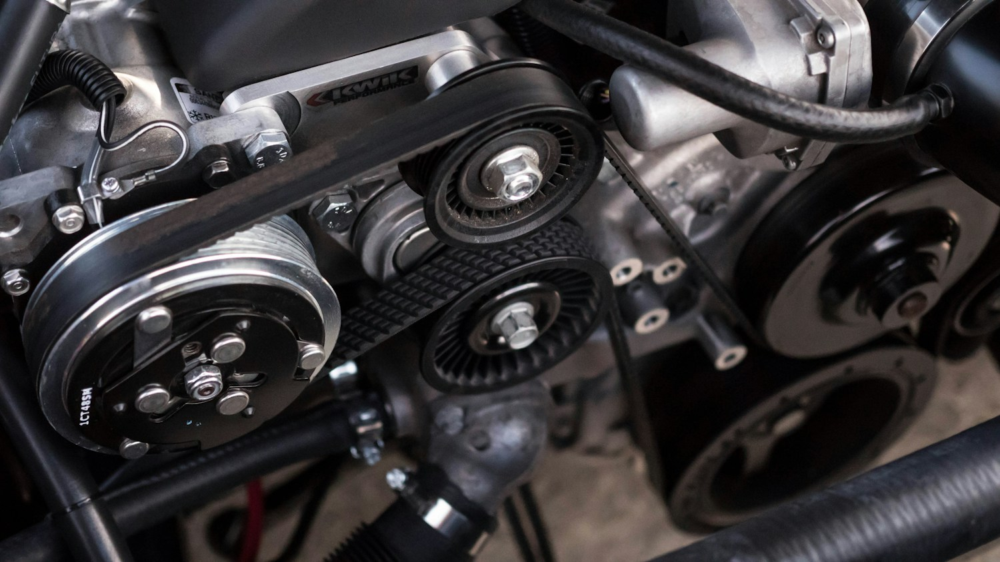
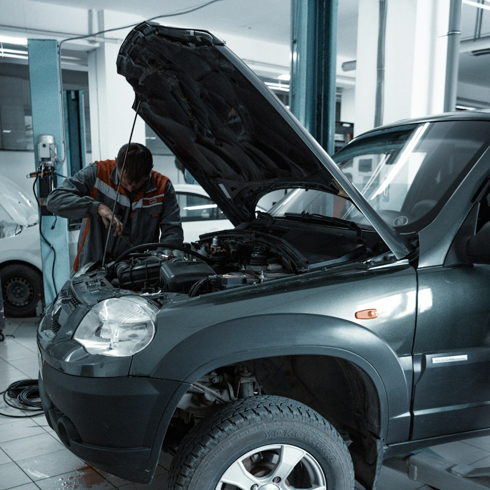

01Mantenimiento
Afinamiento de motor
¿Jalonea o consume más combustible?
Consulte por una revisión y afinamiento según el estado de su motor.
- Bujías, filtros e inyección
- Atención según el vehículo

TALLER MECÁNICO · TRUJILLO
Mantenimiento, diagnóstico y reparación en Trujillo. Cuéntenos qué le pasa a su carro y encontremos el siguiente paso.
Urb. Natasha Alta, Mz. O, Lt. 09· Trujillo01 / SERVICIOS
Desde el mantenimiento de siempre hasta ese ruido que acaba de aparecer. Encuentre lo que necesita y conversemos.
¿Jalonea o consume más combustible?
Consulte por una revisión y afinamiento según el estado de su motor.
¿Chilla o vibra al frenar?
Revisión del sistema de frenos para identificar el origen del ruido o la vibración.
¿Suena en los baches o se va de lado?
Consulte por amortiguadores, rótulas y componentes de dirección.
¿Se encendió el check engine?
La lectura de fallas ayuda a orientar la revisión del vehículo.
¿Ya toca el próximo cambio?
Consulte el aceite y los filtros adecuados para la marca y modelo de su carro.
¿No sabe qué revisión necesita? Cuéntenos qué le pasa a su carro.
Consultar por WhatsApp
02 / ASÍ TRABAJAMOS
Su carro es parte de su día. Por eso, el trabajo empieza por escuchar qué necesita y explicarle la revisión.
Envíe la marca, el modelo y lo que ha notado. Coordinamos la revisión por WhatsApp.
La revisión permite explicar lo que necesita el vehículo y preparar su cotización.
Con la cotización a la mano, converse con el taller sobre el trabajo y la entrega.
03 / COTICE SU SERVICIO
El precio depende del vehículo y del trabajo que necesita. Con estos datos podemos orientar mejor su consulta.
¿Prefiere escribir directamente?Abrir WhatsApp ↗ANTES DE VISITARNOS
Escríbanos por WhatsApp con la marca, el modelo y una descripción de lo que necesita. Puede usar el formulario de esta página para preparar el mensaje.
Depende del servicio. Para un mantenimiento puede indicar la marca y el modelo; si existe una falla, la revisión del vehículo permite precisar el trabajo.
Sí. Escriba por WhatsApp para consultar disponibilidad y coordinar su visita a Urb. Natasha Alta, Mz. O, Lt. 09, Trujillo.
04 / ENCUÉNTRENOS
Urb. Natasha Alta, Mz. O, Lt. 09
Trujillo, La Libertad
Por la Corte, frente al Hotel AWQA
Lunes a viernes: 8:00 a. m. – 6:00 p. m. Sábado: 8:00 a. m. – 1:00 p. m.